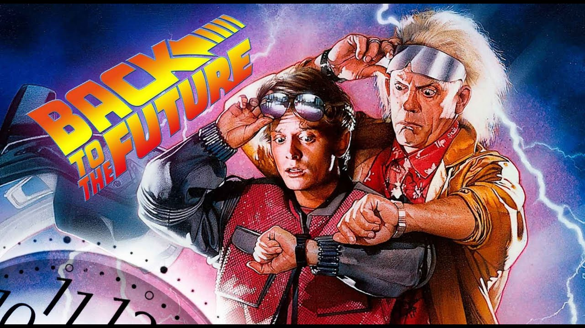
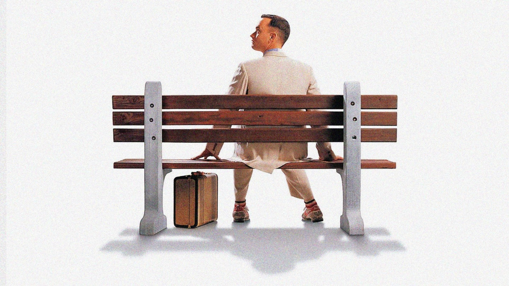

1980-е годы
В 1980-е годы в США - это период президентства Рональда Рейгана. Страна пережила Вьетнамскую войну, Уотергейтский скандал и наконец обрела покой - политики и СМИ говорили о том, что теперь все тихо и хорошо. Но кино кричало об обратном. Кинематограф говорил все плохо и все является не таким, как кажется. В 1980 г. вышел "Бешеный бык" о противоречивом сложном человеке, который борется с самим собой, со своими страхами и реальными проблемами. В этом же году на экранах были "Обыкновенные люди" - эмоциональный рассказ о семье в кризисе, о сломленных людях, боящихся окунуться в темные омуты, живущие внутри них. "Синий бархат" 1986 г. и "Сияние" 1980 г. погружали зрителя в амбивалентные, странные миры. А революционное использование Стенли Кубриком стэдикам позволило погружаться зрителям в мир повествования и терять счет времени. В 1980 г. выходит "Звездные войны: Империя наносит ответный удар" Джорджа Лукаса, в 1981 г. "Индиана Джонс: В поисках утраченного ковчега" Стивена Спилберга и Джорджа Лукаса, в 1982 г. "Инопланетянин" и "Полтергейст" Стивена Спилберга, в 1984 г. "Гремлины", в 1985 г. "Балбесы" - все эти фильмы были студийными кассовыми экшенами с напряженными сюжетами, но все они базировались на реальных историях людей и городских легендах. А Роберт Земекис снял "Назад в будущее" 1985 г. и "Кто подставил кролика Роджера" 1988 г. - динамичные фильмы, созданные до компьютерной графики с очень сложными съемками и физическими спецэффектами. "Всплеск" 1984 г., "Аэроплан" 1980 г., "Полицейская академия" 1984 г., "Крокодил Данди" 1986 г., "Трое мужчин и младенец" 1987 г., "Охотники за привидениями" 1984 г., "Голый пистолет" 1988 г. привнесли много нового в комедию. А популярное телешоу "Субботним вечером в прямом эфире" превратило комедийных актеров в суперзвезд. 1980-е годы были периодом оптимизма после сложных 1970-х. Однако существовал страх, что благополучие может рухнуть и это породило постапокалиптический поджанр боевиков. "Робокоп" 1987 г., "Безумный Макс 2: Воин дороги" 1981 г., "Бразилия" 1985 г., "Бегущий по лезвию" 1982 г. демонстрировали страшные, но одновременно невероятно красивые, визуально изощренные миры. В 1986 г. Джеймс Кэмерон снял сиквел фантастики Ридли Скотта "Чужие". Его сильная, храбрая героиня Сигурни Уивер разорвала шаблон женщин-героинь в боевиках. Такие ленты как "Роковое влечение" 1987 г., "С девяти до пяти" 1980 г., "Деловая женщина" 1988 г., "Теленовости" 1987 г., "Тутси" 1982 г. провозгласили изменения в позиции женщин, их карьерных амбициях. Они показали реалистичных героинь, берущих дело в свои руки и добивающихся успеха. Так как забыть ошибки прошлого, вычеркнуть 1960-е и 1970-е из истории США было невозможно, в кино появились боевики, прославляющие героев сильной Америки. Сильвестр Сталлоне, Арнольд Шварценеггер, Жан-Клод Ван Дамм, Чак Норрис стали олицетворять образ крутых героев. В отличие от героев былых времен эти ослепляли своими физическими способностями и прекрасным торсом. Но уже к концу 1980-х "Крепкий орешек" 1988 г. с Брюсом Уиллисом вернул на экраны некрутых героев боевиков, заставляющих сопереживать герою и видеть в нем обычного человека. Кроме того, этот фильм стал первым, показавшим, что злодей может быть интеллектуалом. Кинематограф обогатился множеством новых громких режиссерских имен. Стивен Содерберг, Милош Форман, братья Коэны, Тим Бертон, Гас Ван Сент, Джим Джармуш и др. стали создавать малобюджетные и смелые фильмы, открывать нечто новое в киноискусстве и говорить на неожиданные темы. 1980-е стали периодом новых идей и новых образов в кино. Это время комедий о реальной жизни, драм на острые социальные темы. Это время исследования вопроса что значит быть человеком. Помимо этого появились истории о новых фантастических мирах. Зародилась чрезмерность, быстрота, громкость и зрелищность мира кино.
Кинематограф 1980х годов

1990-е годы
Одним из главных фильмов 1990 г. стал "Славные парни" Мартина Скорсезе. К тому моменту уже очень многое было снято о мире мафии и о гангстерах, но этот фильм вдохнул нечто новое - зрители увидели правдивую историю, где гангстер - это работа, где мафия сплетает в единое целое семью и бизнес. Эта картина стала олицетворением нового кино, где главные герои - это люди вне системы. Зрители стали болеть за преступников и превозносить антигероев. "Основной инстинкт" 1992 г., "Молчание ягнят" 1991 г., "Тельма и Луиза" 1991 г., "Казино" 1995 г. и др - это все истории о жестоких мирах, где герои заслуживают плохой участи. Это дерзкие, смелые фильмы, в которых насилие и выглядит как наслаждение. В 1990-х кинематографисты осознали силу реальных историй в кинематографе. Для того, чтобы получилось интересное кино, не нужно превращать историю в визуальный спектакль. Совершенно новый и уникальный подход к отображению истории страны появился в фильме "Форрест Гамп" 1994 г. - история страны в рамках одной биографии, объединившей трагедию и комедию. В 1990-х годах ветеранам Второй мировой войны уже было более 70 лет. И в кино вылилась ностальгия по тому времени, рассказы об опыте ветеранов, увлекательное, но реалистичное отображение событий. Были сняты великие фильмы о войне, которая уже начала забываться: "Тонкая красная линия" 1998 г., "Английский пациент" 1996 г., "Спасти рядового Райана" 1998 г., "Список Шиндлера" 1993 г. и др. Кинофестиваль Сандэнс дал дорогу не только новому черному кино, но и дал шанс на успех независимым дешевым кинолентам. Владельцы студий перестали смотреть на то, кто сделал кино, они стали смотреть на само кино - инди кинематограф стал составной частью политики Голливуда. "Под кайфом и в смятении" 1993 г., "Клерки" 1994 г., "Бешеные псы" 1992 г., "Криминальное чтиво" 1994 г., "Тусовщики" 1996 г. не просто стали культурными феноменами, они изменили правила по которым создаются фильмы. Появился новый подход к сторителлингу и взаимодействию зрителя с историей фильма. В начале 1980-х анимационная студия Дисней была в застое. Однако в 1990-х старый стиль был немного переработал, добавил музыки и возродился с такими хитами как "Русалочка" 1990 г., "Красавица и чудовище" 1991 г., "Аладдин" 1992 г., "Король Лев" 1994 г. А в 1995 г. вышел первый полностью созданный с помощью компьютерных технологий мультфильм от студии Пиксар - "История игрушек". Эта анимация коренным образом изменила культуру - мультфильмы перестали быть развлечением только для детей. В новых мультфильмах не было поющих героев, кардинально новой стала не только технология, но и сценарный подход к созданию героев. Молодые режиссеры восстали против студийной системы и стали создавать фильмы, которые не вписывались в типичные жанры. Именно такие смелые фильмы стали получать успех у критиков и зрителей. Майкл Манн преуспел с фильмами "Последний из могикан" 1992 г. и "Схватка" 1995 г. Братья Коэн преуспели с "Фарго" 1996 г., "Большой Лебовски" 1998 г. Пол Томас Андерсон преуспел с "Ночи в стиле Буги" 1997 г. Компьютерные технологии в 1990-х стремительно развивались и позволяли создавать фильмы на новом уровне зрелищности с фантастическими мирами, героями и мирами. На съемках "Терминатор 2: Судный день" 1991 г. буквально изобреталась база компьютерной графики. А "Парк Юрского периода" 1993 г. и "Титаник" 1997 г. показали, что технологии не просто дополняют истории, а погружают зрителя в новую реальность. Старомодный дорогой фильм "Титаник" благодаря технологиям поднял кинематограф на новый уровень эпичности. А вышедший в 1999 г. фильм "Матрица" изменил правила киноповествования полностью. Он привнес каноны восточного киноискусства в западное кино. Трюки выполняли сами актеры после шести месяцев тренировок - это позволило рассказывать историю прямо во время экшена, показывать лица героев во время драк. Кинематограф 1990-х доказал, что кино может быть чем-то большим, чем набор типичных жанровых клише. Появились безумные, смелые, дерзкие киноэксперименты. Это десятилетие заложило основы для всего, что происходило с киноиндустрией последующие 20 лет. О своем месте заявили независимые кинематографисты, черные и женщины. Появились компьютеризированные блокбастеры, которые в дальнейшем стремительно развивались.
Кинематограф 1990х годов
